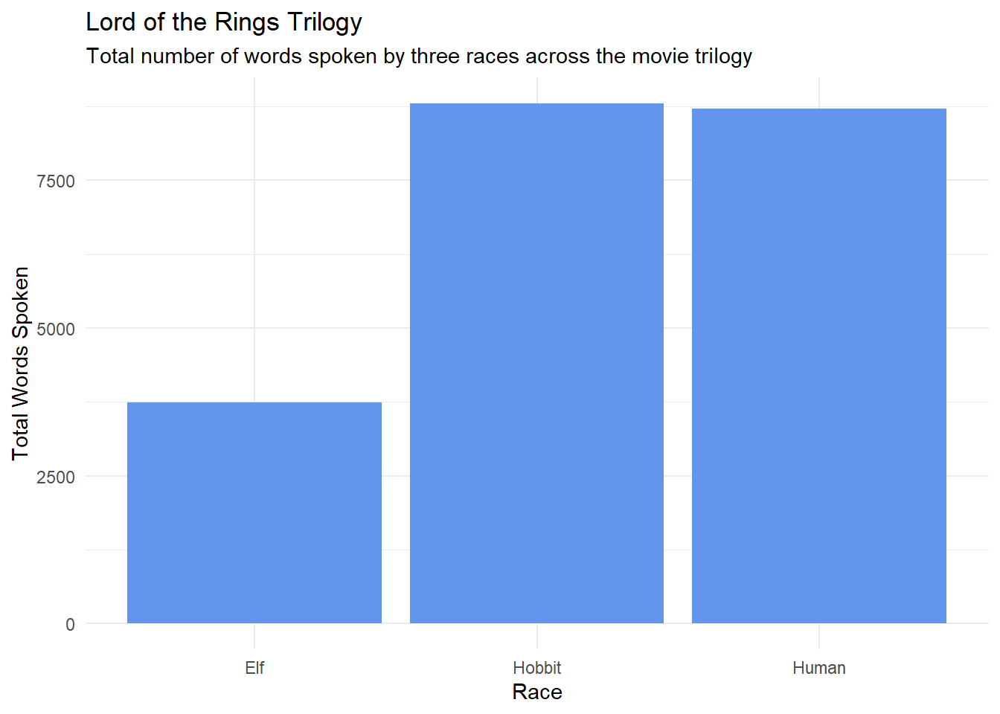

Table 1: Total number of words spoken by each race across the entire LOTR trilogy
Race
Total Words
Elf
3737
Hobbit
8796
Human
8712
Figure
Code
d_summary %>%ggplot(aes(Race, total_words)) +geom_col(fill ="cornflowerblue") +theme_minimal() +labs(y ="Total Words Spoken",title ="Lord of the Rings Trilogy",subtitle ="Total number of words spoken by three races across the movie trilogy")

Figure 1: Total number of words spoken by three races across the movie trilogy
8. Let’s make messy data. Your fifth code chunk should include code that uses lotr_tidy and pivot_wider() to:
Get one variable per Race. Save this as an object
Get one variable per Gender. Save this as an object
Filter to remove the rows in student_id that represent aggregate summaries
Tidy the remaining dataset such that a case represents a score and percentage within a unit (i.e., score and percentage will be separate columns). Take a VERY close look at the data. You will be able to use the names_sep argument if you firstrename() two columns. Identify those two columns first. Also, you will need to first pivot_longer and then pivot_wider in order to tidy properly. In these data, “tidy” is a row for each of the seven units for every student_id.